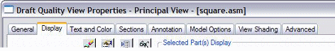
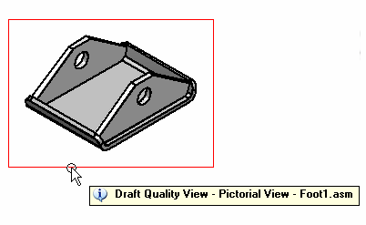

Draft quality and high quality views
Views fall into two general categories: draft quality and high quality.
For assembly models, which typically are larger and more complex than part or sheet metal models, you can generate either a draft quality or a high quality view. Draft quality views usually require less processing time than high quality views, and only visible lines are created.
For part and sheet metal models, you can only generate high quality views. High quality views are the default representations of the model.
You specify whether to create a draft quality view or a high quality view, as well as other view options, in the Drawing View Wizard.
View generation options
The view generation options displayed by the Drawing View Wizard depend upon the source model file type: .asm, .par, or .psm. Once the view is generated, you can make additional modifications using the tabbed Drawing View Properties dialog box.
Some of the drawing view generation and display options include:
-
Whether the view is a draft quality or high quality drawing view.
-
Whether the assembly model and/or its parts will be generated as simplified graphics.
-
Whether part or sheet metal model graphics are displayed As Designed, Simplified, or Flat Pattern.
-
Whether hidden and tangent lines will be visible in orthographic and/or pictorial views.
-
Whether tube centerlines, if present, are generated.
-
Whether to show material-removed or material-added assembly features, such as cutouts, holes, and chamfers, or weldments and protrusions.
Identifying views on a drawing
If you are looking at a drawing and want information about a particular view on the drawing sheet, there are two quick ways to get it:
-
You can right-click the view and select the Properties command to display the Drawing View Properties dialog box. Here, the dialog box title bar displays information about the drawing view.

-
You can use the tool tip feature. To see how this works, click the Select Tool, and then place the cursor on the drawing view border and leave it there. A tool tip identifies the view quality, the view type, and the name of the source model document. For example, the full tool tip for an independent detail view of a screw might display: "High Quality View - Independent Detail View - AllenScrewM8.par." The tool tip for a draft quality drawing view is shown in this illustration.

If you do not see tool tips displayed on the drawing view, set both of these options on the Helpers tab in the Solid Edge Options dialog box: Show Tool Tips and With Enhanced Text.
Draft quality views
Available for assembly models only, a draft quality view is a quickly generated line rendering for display and annotation in the Draft environment. Only visible edges are created. Typically, draft quality views are used to produce interim design drawings and to provide a pictorial illustration of a ballooned parts list.
Draft quality views are particularly useful when working with very large assemblies, as the time it takes to generate the view is reduced. However, when you zoom in on a draft quality view created from a large assembly, you may notice that it displays at a lower resolution.
-
Creating draft quality views
To create a draft quality drawing view, set the Create Draft Quality Views option on the Assembly Drawing View Options dialog box of the Drawing View Wizard.
-
Using draft quality views
You can use draft quality views as input for principal views, auxiliary views, cutting planes, section views, and broken-out section views.
Adding Annotations–You can add annotations such as balloons to draft quality views and create parts lists from them. You can also place elements that connect to a drawing view with a leader, such as callouts and weld symbols. For these types of annotation operations, you can use inactive parts.
Adding Dimensions–Because dimension values are generated from the 3D model, you first need to use the Activate Parts command to make the model part data available for dimensioning.
Final Drawing Production–Although draft quality views can be shown in shaded and wireframe formats, only visible lines are generated. To achieve the best appearance for final drawing production, you may want to convert the draft quality view to a high quality format. To do this, use the Convert to High Quality View command on the selected drawing view's shortcut menu.
High quality views
A high quality view is a drawing view that provides an accurate representation of the model because it is generated from Parasolid objects. High quality views may be used for precise operations, such as dimensioning, and for final drawing production.
-
Creating high quality views
The default settings on the Drawing View Wizard generate a high quality drawing view for assembly, part, and sheet metal models. You can start the Drawing View Wizard using the File menu→Drawing View of Active Model command or by selecting the Drawing View Wizard command button.
-
Converting draft quality to high quality views
To convert a draft quality view to a high quality view, use the Convert to High Quality View command on the selected drawing view's shortcut menu.